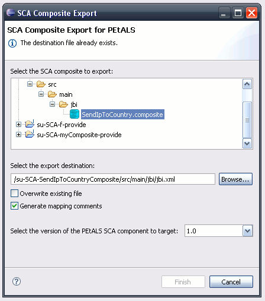

Deploying an SCA application on Petals consists in creating a deployment for
the Petals SCA component.
The different ways of doing this are described here.
Select File > Export... > Petals > Service Assembly for SCA.
Or right-click your project and select Petals > Package for Petals.

The packaging operation is configured through a wizard made up of three pages.
The first page configures the generation of the jbi.xml file and the target file.
Select the project to export, the SCA composite/application to expose, the version
of the Petals SCA component to target and the destination file.
Click Next when this is done.
The second page deals with the java implementations.
On this page, you have to select all the elements that will be added to the implementation jar file.
Java projects referenced by your project are also part of this page.
Make sure to embed the SCA artifacts in the jar (*.composite).
Click Next to display the last page.
This one deals with the classpath, i.e. all the libraries your project (and its
referenced projects) depend(s) on. Select the ones to embed in the deployment archive.
Click Finish to start the archive creation.
The created archive should be at the location you gave. It should contain the following artifacts:
The *.zip archive must contain:
This kind of packaging applies when you created a Maven project structure.
The only missing thing for this project is the JBI descriptor.
You can generate one by selecting File > Export... > Petals > JBI Descriptor for SCA.
Or right-click on the SCA composite and select Petals > Generate jbi.xml.
You should then get the following page.
Just make sure the destination file is the src/main/jbi folder of your project. You can then use the Petals Maven plug-in as usual.
Few words about it.
This kind of packaging is available in the Petals SCA plug-in. It works as the usual action
"package for Petals", which is available on non-Java projects for Petals.
It can be used as an emergency packaging solution, in case where others would not work correctly. This packaging copy every resource located in the resource folder of the project. For SCA, it means you can create your implementation jar with the usual Java tooling, and then save it in the project. The classic packaging will put it int he deployment archive it generates.